Unless otherwise noted, all figures are from S. Adler’s Study of Orchestration
Each of the instruments in a string quartet (two violins, viola, cello) have specific ranges. All have fixed low ends, and the higher ranges are a bit more flexible.
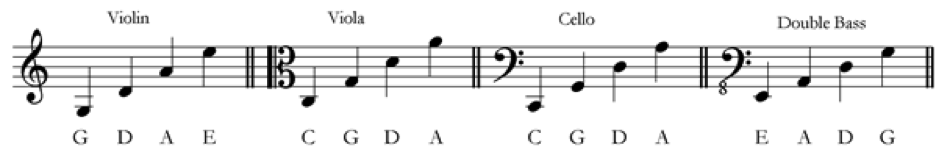
mymusictheory.com
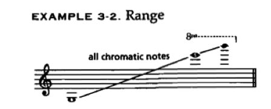
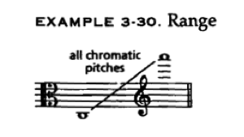
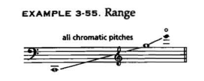
As instruments move higher up each string, the length of string that can resonate becomes shorter and shorter, changing the color of the sound.
For detailed explanations of how string sounds change, see the chapter sections on individual instruments:
pluck the strings with fingertip
Provide some time (a quarter note or two, depending on tempo) to lift fingers and shift bow before and after.
The pizz indication holds until you cancel it out with arco.
Ravel’s String Quartet in F Major demonstrates pizzicato, as well as several other string writing techniques.
Pizzicato is highlighted in blue in the annotated score and in the video below.
Slur markings imply the notes should be played under one bow (or without changing direction of the bow).
Staccato markings indicate the player should lift the bow from the string.
Indicating “detaché” below the staff is somewhere between legato and staccato.
Cancel out a “detaché” marking with “norm.” or “ord.”
If you do not indicate a slur, most players will make an executive and artistic decision about how to handle the bowing, or change bow direction every time a pitch changes.
Schubert’s “Death and the Maiden” is a piece for string quartet that shows the spectrum of connection and detachment for string quartet.
Bowings are highlighted in pink in the annotated score and in the video below.
Rapid reiteration of the same pitch. One slash for twice as fast, two slashes for twice that
Example: see above at letter A in viola (viola is playing ~16th notes)
Usually, three slashes = unmeasured (unmarked for proportional time)
Tremolo between two pitches: same as with one pitch, but… two.
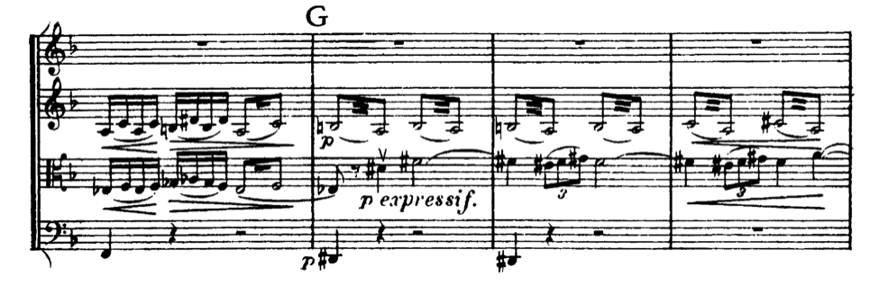
Ravel String Quartet in F Major: violin II
Play two pitches (on two adjacent strings) at the same time.
Triple stops usually are played with 1+2 or 2+1 technique: it’s hard to play three strings at once.
Note: You CANNOT have double stop that is less than a fifth above the lowest note on the lowest string:
Always be careful of your two lowest strings, and check the fingering chart to make sure that you’re not asking for too much of a hand extension.
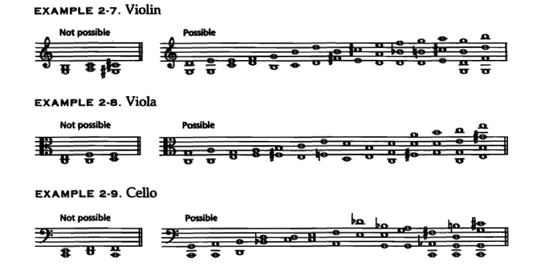
Double stops get more particular in the lower end of the instrument, particularly on the cello because of hand reach. Always check your fingering chart to determine if a double stop is possible: each node on the string represents a half step.
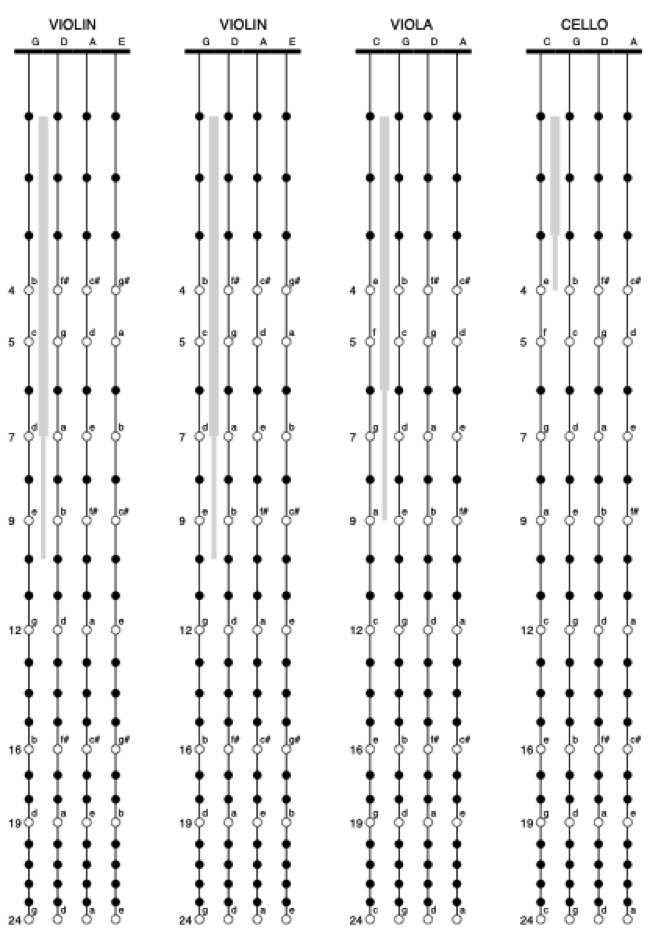
(From F. G. J. Absil)
You can also check the instrument-specific chapters linked above.
If you want to cover more ground and still imply the three-note sonority, think about arpeggiating the chord.
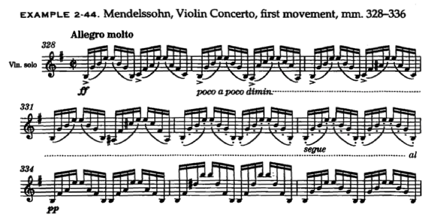
Techniques like this one and variations of tremolo or double stops help imply a harmony while also providing some forward motion. These can be good alternatives to holding long notes in a bar as harmonic support.
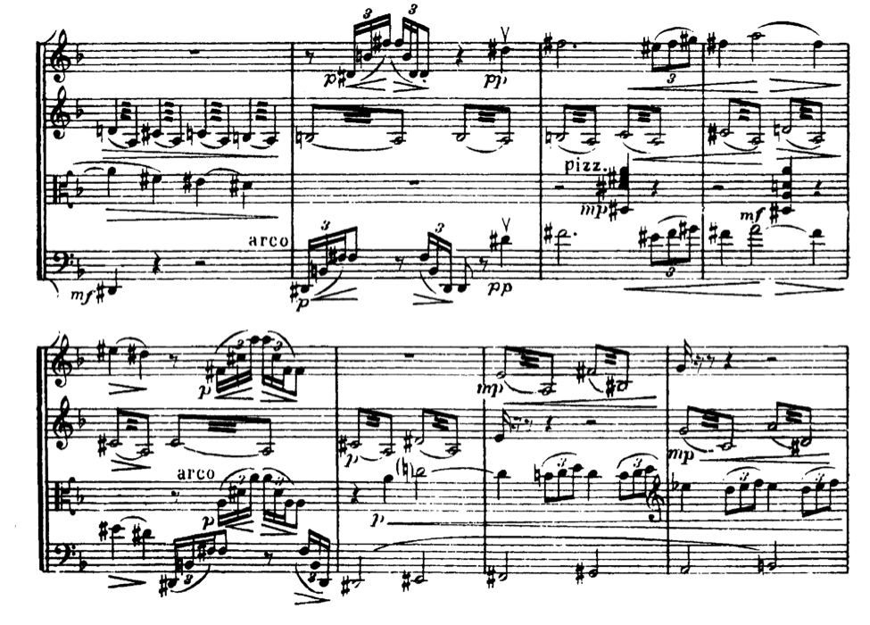
Ravel String Quartet in F Major: violin I, Viola, Cello
Harmonics are created by dividing a string by a certain fraction in order to engage and isolate specific overtones. The effect is usually a more hollow sound
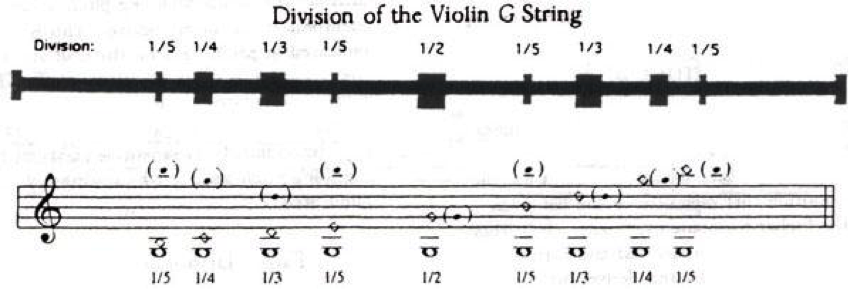
Harmonics can be natural (according to the Harmonic series and played with specific fingerings)
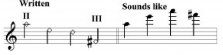
(must specify string and indicate with diamond notehead;
best done according to charts below)
or artificial (most often a touch-fourth in the smaller instruments, touch-third in cello in particular):
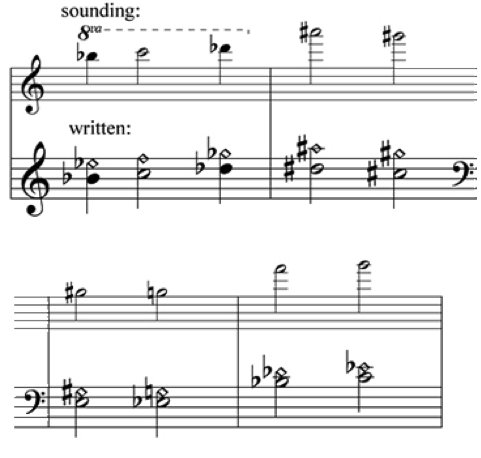
Nifty charts for hearing and understanding the charting for harmonics can be found here:
It is kind to indicate the resultant pitch if you are unsure about your notation.
The third movement of Bartok’s Romanian Folk Dances for Violin and Piano (about 2:00 into this video) shows both the sound and notation of harmonics on the violin.
This whole piece is also good to watch so you can hear and see clearly the distinctions between slurred and unslurred pitches, staccato markings, and other articulations.
William Walton’s Viola Concerto gives you a better idea of the sounds and huge range capability of the viola. It’s easy to imagine it only in the role of inner voice, but there’s so much more to it.
The Saint Saens Cello Concerto shows a number of the above techniques in the cello with the sound a bit more exposed.